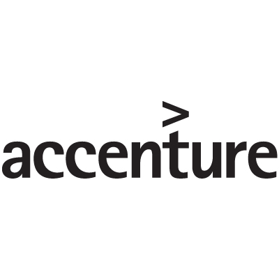

In this project, I used Pandas library in Python to clean and analyse big data to generate business insights and identify key business intelligence that can improve sales.
I also conducted RFM analysis to recommend new customers to be targeted to drive more value .

In this project which served as a Virtual Internship in Accenture,I helped a company Social Buzz to determine it's top 5 contents category
and also determine type of content that will perform better
In this project,I cleaned Tata business data to generate accurate data visualization for business insight. I transformed and processed client data by using Pandas and Python to ensure data completeness and validity
I also provided technical insights on how the client can strategize by analyzing major contributors to the revenue
In this project, I Utilized Beautiful Soup to extract data from Skytrax (airline review site)
and also transformed data by using Python NLTK (WordNetLemmatizer and stopwords) libraries
and built a predictive model with scikit-learn

A summary of visuals i've created using Tableau